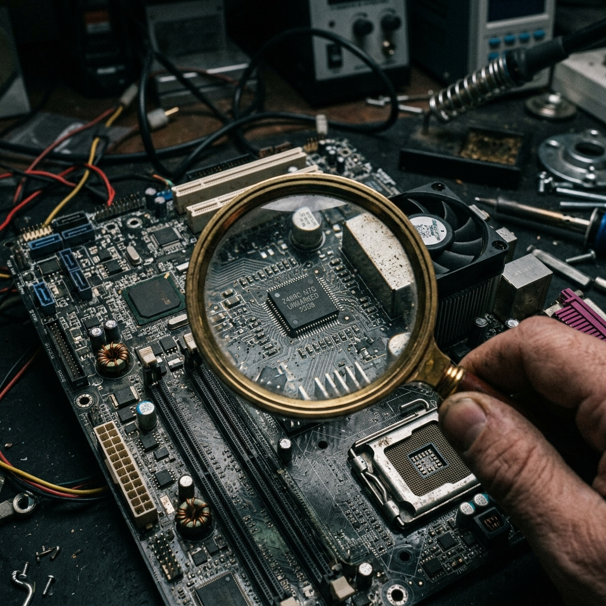

> STATUS: ONLINE
A VERDADE POR TRÁS DA TECNOLOGIA, SEM FILTROS.
Testes reais, investigações digitais e experimentos que a maioria não tem coragem de fazer. Aqui é a oficina do técnico curioso raiz.
DESCER
Testes reais, investigações digitais e experimentos que a maioria não tem coragem de fazer. Aqui é a oficina do técnico curioso raiz.
DESCER
Aqui eu testo, abro, investigo e descubro o que tem por trás da tecnologia. Se você tá cansado de review roteirizado e quer ver o negócio na bancada, funcionando (ou explodindo), você tá no lugar certo.
O que acontece na bancada é real. Se der erro, eu mostro o erro.
Eu não aceito caixas pretas. Abro tudo para ver os componentes reais.
Técnicas reais de investigação e segurança digital na prática.

Hardware duvidoso, pendrives misteriosos e equipamentos baratos. O que realmente tem lá dentro?
Rastreamento, engenharia reversa e a verdade nua e crua sobre aparelhos do dia a dia.
Testes de invasão, análise de malwares e como se proteger no mundo real sem enrolação.
Mais de 50 mil técnicos, curiosos e hackers de bancada já fazem parte.
INSCREVER-SE AGORA
"Esse canal apareceu do nada pra mim e eu simplesmente não consigo parar de assistir. O cara abre TUDO."
"Finalmente conteúdo tech que não parece propaganda de startup. Raiz demais."
"A investigação que ele fez naquele pendrive... absurdo! Melhor canal de tech atual."